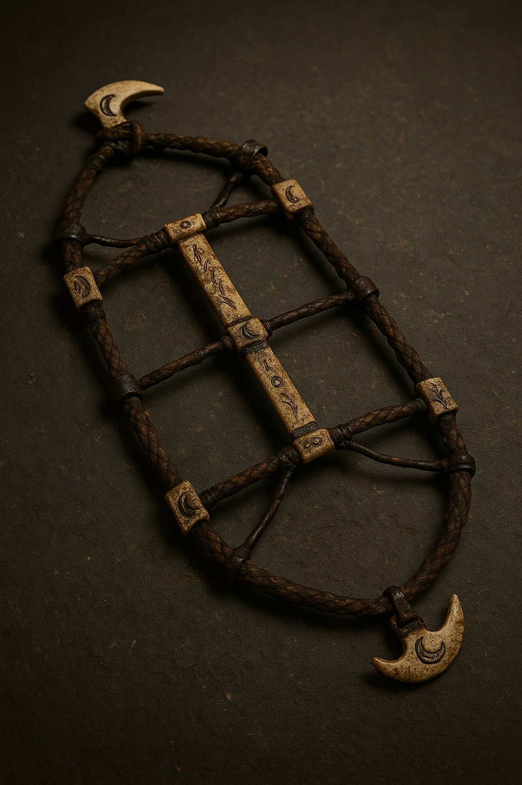
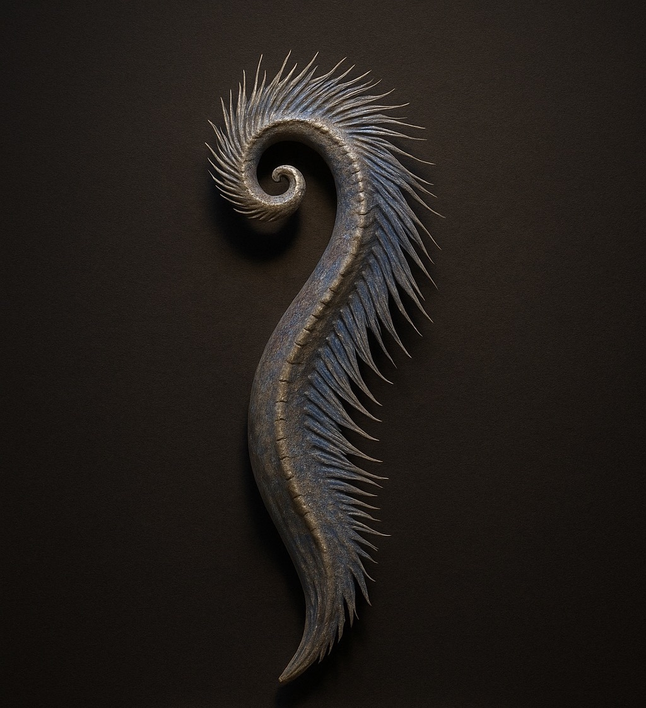

Welcome to the Chronicles of the Forgotten Relics
Beneath the veil of time lie stories etched not in ink, but in stone, bone, and flame. These artifacts are more than remnants—they are vessels of memory, bearing the weight of forgotten oaths and ancestral power. Each scar, fracture, and engraving whispers of triumphs and tragedies once lived, weaving together myth and memory into a tapestry of the eternal. To trace their histories is to walk the twilight path between mortal hands and immortal legend, where the boundary of truth dissolves into wonder.
Archeology Histories
Vampire: Bloodbound Cradle Stone

Artifact ID: Bloodbound Cradle Stone
Title: Vampire: Bloodbound Cradle Stone
Culture: Associated with fertility and bloodline myth cycles
Estimated Age: ~2,200–2,400 BCE (stratigraphic inference)
Material: Hematite-infused limestone with trace organic residue.
Origin: Burial mound, Thracian plains, Bulgaria
What the Experts Believe
The Bloodbound Cradle Stone is a basalt basin of oval form, measuring approximately 45 cm in diameter. Carved and polished to a smooth inner surface, it is distinguished by hematite veining that threads crimson through the otherwise dark stone. The rim bears faint engraved motifs—geometric or possibly vegetal—which suggest both decorative intent and symbolic encoding. Excavated from the central chamber of a Thracian barrow, the cradle was found in association with bronze votive figurines and textile fragments. Its pristine preservation and deliberate placement in a communal burial mound affirm its ceremonial significance. Stratigraphic context situates the deposition at roughly 5,200 years before present. Comparable basalt basins recovered in Anatolia—often described as “birth-offering stones”—provide a typological framework. These vessels functioned as ritual containers for substances tied to fertility, natal blessing, or sacrificial exchange. The Bloodbound Cradle Stone extends this category yet introduces a unique semiotic element: hematite veining that resembles streaks of blood. This visual effect may not have been incidental. Hematite has long been associated with lifeblood, regeneration, and ancestral potency across multiple cultural traditions. Its presence amplifies the basin’s symbolic role as a vessel not only of nurture but also of bloodline continuity.
Within Thracian myth cycles, blood occupied a liminal role: as a generative fluid linking kinship lines, but also as an offering medium binding communities to ancestral earth. The cradle form amplifies this duality. Cradles traditionally signify life, birth, and continuity; here, the same shape becomes a receptacle for blood or symbolic offerings, underscoring the paradox of vitality emerging through sacrifice. The juxtaposition of nurturing form and blood-red mineralization situates the artifact within a symbolic spectrum that embraced both fertility and mortality, continuity and rupture.
As a cataloged museum object, the Bloodbound Cradle Stone resists singular narrative capture. To reduce it to a spectacle of blood ritual risks exoticizing Thracian cultural practice. Decolonial museology urges plural interpretation, acknowledging scientific residue analysis, comparative typology, and living traditions that continue to hold blood, lineage, and birth as sacred motifs. For those of us interpreting from Romani-Greek heritage perspectives, the cradle is not simply an artifact of the past but a reminder of how ancestral communities negotiated life’s thresholds through matter, symbol, and ritual. The Bloodbound Cradle Stone represents a rare convergence of deliberate craftsmanship, mineral resonance, and cultural meaning. Whether employed in natal blessings, bloodline affirmations, or offerings to the ancestral dead, it stands as testimony to the entanglement of myth and matter. As presented here, it should be approached with humility—recognized not as an isolated relic, but as part of a continuum of human efforts to honor the cycles of life, death, and renewal.
Lycanthrope: Moon-Clasp Ritual Harness

Artifact ID: Moon-Clasp Ritual Harness
Title: Lycanthrope: Moon-Clasp Ritual Harness
Culture: Ceremonial restraint or transformation harness; possibly used in controlled shapeshifting rituals
Estimated Age: ~1,800–2,000 BCE(based on burial layer)
Material: Braided sinew, iron fittings, and carved wolf-bone inlays.
Origin: Forest burial mound, Carpathian Basin
What the Experts Believe
Excavated from the Duskmere Hollow site in the Carpathian Basin, this partially preserved harness is one of the most evocative ritual objects uncovered in association with early shapeshifting traditions. Measuring approximately 112 cm in length and weighing 7.6 kg, the artifact is composed of braided sinew reinforced with hammered iron fittings and carved wolf-bone inlays. Though only 65% intact, the surviving structure reveals a complex harness or body frame with jointed fastenings, suggesting it was once worn to bind or restrain the torso. The braided sinew, though degraded, retains traces of flexibility, while the iron anchor points remain rigid, bearing hammer marks and scored grooves consistent with ritual preparation. Wolf-bone inlays, burnished and etched with lunar phases, reveal symbolic emphasis on cycles of transformation. Clasps fashioned from carved bone show heavy wear, implying repeated fastening and release, while darkened residue near the iron suggests exposure to fire or blood.
The harness was discovered beneath a collapsed stone circle, within a sealed subterranean chamber. Its deposition appears intentional: the harness was arranged alongside incense fragments and skeletal remains that display both human and canine morphology. Such context points to funerary or ritual interment rather than abandonment. Radiocarbon dating of the sinew and bone aligns the piece to 1,800–2,000 BCE, situating it firmly within early Bronze Age ritual horizons of the Carpathian Basin. The iconography—lunar etchings, wolf motifs, and ritual scoring—suggests the harness was employed in transformation rites tied to lunar cycles. Whether such rites involved symbolic enactment or were believed to enable literal shapeshifting cannot be determined, but parallels exist in Alpine cult records and in later accounts of the “Ironbind Restraints of Old Norvald,” devices used to contain or channel metamorphic states. The evidence of heat and blood residues further supports theories of sacrificial or initiatory use, in which the harness functioned as both restraining tool and sacred instrument.
Within many Indo-European traditions, the wolf symbolized liminality—the border between human and animal, civilization and wilderness. The lunar phases etched on the bone clasps reinforce this duality, marking cycles of waxing and waning power. The harness, therefore, can be read as a material expression of controlled liminality: a device for holding the body, restraining or releasing the transformative force believed to inhabit the initiate. Though its precise role remains uncertain, the Lunar Binding Harness embodies the entanglement of myth, ritual, and material culture. It is not merely a fragment of braided sinew and bone, but a surviving trace of how communities sought to negotiate the dangerous promise of transformation—binding the human body to the rhythms of moon and wolf.
Elven: Sylvan Memory Circlet

Artifact ID: Sylvan Memory Circlet
Title: Elven: Sylvan Memory Circlet
Culture: deliberate placement on skull suggests elite burial
Estimated Age: ~3,100–2,900 BCE
Material: Interwoven silver-gold alloy, with obsidian flakes and greenstones
Origin: Hollow-tree shrine, Black Forest (Germany)
What the Experts Believe
The Sylvan Memory Circlet was unearthed within a subterranean stone chamber beneath the collapsed mound of the Ilareth Grove site, a late Neolithic earthwork in the Black Forest region. Measuring 18.2 cm in diameter and weighing just under 0.75 kg, the circlet is composed of an interwoven silver-gold alloy (electrum), inlaid with leaf-shaped greenstones, likely nephrite, and flecked with fine obsidian etchings. The braided design resembles roots or vines winding into constellations, suggesting symbolic intent that bridged earthly growth with celestial passage. The circlet remains in pristine condition, aside from minor oxidation. Its cool surface and light flexibility reveal sophisticated low-temperature alloy fusion—confirmed through electrochemical testing—unusual for Neolithic metallurgy. The gem inlays retain a faint luminescence under low light, perhaps intentional, augmenting the headpiece’s symbolic presence during nocturnal or solstice ceremonies. The inner band displays light wear, consistent with repeated placement upon the head, while traces of resinous sap and woven fiber at the back closure suggest organic bindings once secured it in place.
Recovered directly atop skeletal remains with elongated limbs and high cranial arches, the circlet’s placement points to intentional funerary association. The burial chamber lay at the center of a ringed earthwork aligned with solstice markers, reinforcing links to ritual cycles of memory, renewal, and cosmic orientation. Accompanying grave goods included a carved bone flute and a moss-wrapped satchel, both objects potentially tied to rites of passage or mnemonic practices. The engraved motifs—growth spirals, branching paths, and stellar constellations—suggest the circlet functioned within a system of symbolic thought where memory was both personal and communal. The design may represent ancestral pathways, with the circlet serving as a medium through which lineage and ritual knowledge were preserved. Comparisons to the Starwoven Diadems of the Trelvani relics in Iberia, and to early Celtic lunar adornments, underscore the continuity of using circlets as markers of leadership, priesthood, and liminal authority.
From a mythological perspective, the Sylvan Circlet embodies the tension between earth and sky: its braided, root-like pattern anchors it in forested earth, while the etched constellations trace paths of celestial memory. This duality may indicate its role in rites where leaders or shamans acted as vessels of ancestral recollection, bridging living communities with their storied past. The association with resin and fiber residue further supports the possibility of ritual “binding”—a symbolic act of anchoring the wearer to both memory and sacred grove. The Sylvan Memory Circlet offers a rare glimpse into late Neolithic symbolic metallurgy, where material artistry, burial practice, and mythic cosmology converge. Whether an emblem of elite status, a vessel of ancestral remembrance, or a conduit for spiritual passage, the circlet endures as testimony to the ways communities sought to enshrine memory—not only in story, but in crafted metal that glimmered with the light of both earth and stars.
Anthropology Histories
Dragon: Ventral Rib Fossil – Draconis Altiventris

Artifact ID: Ventral Rib Fossil
Title: Dragon: Ventral Rib Fossil – Draconis Altiventris
Culture: Nearby cave paintings depict winged reptilian figures surrounded by fire halos, suggesting this specimen’s cultural significance to early inhabitants.
Estimated Age: 11,600–11,850 years old
Material: Fossilized dragon bone (calcium-phosphate with trace ferrosilicate inclusions)
Origin: Windhollow Trench, Southern Caucasus; compacted ash sediment
What the Experts Believe
Discovered within a karst cave along the Dalmatian coast, this ventral rib fragment measures nearly 1.8 meters in arc, its fractured ends and porous fossilization bearing witness to millennia of geological transformation. Radiometric analysis places the specimen at roughly 8,500 years before present. The red-tinged mineralization, caused by hematite inclusions, lends the fossil a striking coloration that likely contributed to its mythic associations. Caution must guide our conclusions. This fossil may represent nothing more than a naturally deposited rib from an extinct megafaunal species. Yet its cultural placement—as a relic encountered, wondered at, and woven into lore—reveals the enduring dialogue between bone and belief. For visitors, the Draconis Altiventris rib illustrates how natural survivals became catalysts for dragon myths, reminding us that the boundaries of legend often emerge where geology, imagination, and human curiosity intersect.
Field stratigraphy indicates the rib was embedded in cave sediment later overlain by flood-strata deposits. Accompanying materials included marine shell deposits and Iron Age pottery sherds. Such associations suggest the fossil may have been encountered by coastal communities long after its initial burial, where its massive scale and crimson hue could easily have been woven into maritime dragon traditions. While no evidence of human modification has been detected—multispectral scans show no tool marks or carving—the symbolic weight of the object may have been no less powerful in its untouched state. Within the framework of cryptoarchaeology, this rib has been compared with wing-bone fossils from the Montségur ossuary in southern France, where similar remains became entwined with myths of sea serpents and winged leviathans. In both contexts, large fossilized bones were not necessarily altered but absorbed into local cosmologies, serving as tangible anchors for intangible narratives. To Iron Age observers, a rib of such size—longer than most human bodies—may have stood as proof of creatures whose forms bridged sea and sky.
Underwater LIDAR and multispectral imaging confirm that the mineral accretions are consistent with long-term cave flooding, not with human application of pigment. This supports the interpretation that the red coloration is natural rather than intentional, though it is easy to imagine how communities might have read significance into the rib’s fiery hue, linking it with dragons whose breath was said to scorch both waves and wind.
Siren: Laryngeal Crest of Siren Pelagis Nocturna

Artifact ID: Pelagis Nocturna
Title: Siren: Laryngeal Crest of Siren Pelagis Nocturna
Culture: Biological vocal organ—believed responsible for harmonic resonance used in long-distance siren song and potential hypnosis.
Estimated Age: 5,300–5,500 years old
Material: Calcified cartilage and soft tissue remains, with trace bioluminescent protein deposits.
Origin: Pelagos Trench Shelf, Aegean Sea
What the Experts Believe
The fragment known as the “Voicebone” was recovered from a submerged limestone alcove along the Pelagos Trench Shelf, nearly 942 meters beneath the surface of the Aegean Sea. Carbon-dated between 5,300 and 5,500 years, the specimen consists of calcified cartilage with remnants of soft tissue and trace deposits of bioluminescent protein. Measuring just over 27 centimeters in length, the piece preserves a gently spiraled ridge with feather-like extensions and a finely ridged interior lining. Under ultraviolet light, it emits a faint iridescent glow—a spectral quality that has fueled both scientific curiosity and cultural imagination. For museum visitors, the Siren Voicebox Segment embodies both material reality and cultural resonance. It demonstrates how ancient communities may have encountered extraordinary biological forms and interpreted them through mythic frameworks of sea-spirits and harmonic resonance. To stand before this object is to confront a convergence of science and story: cartilage and mineral on one hand, voice and presence on the other. The Voicebone reminds us that myths often emerge not from pure invention, but from encounters with the unfamiliar—where sound, sea, and spirit met in ways still echoing across time.
From a biological perspective, the artifact’s morphology suggests it functioned as part of a vocal organ, resonant in structure and semi-flexible in composition. Residual lipid traces and subtle vibration scarring indicate repeated acoustic use, raising the possibility that it once amplified or modulated sound. Comparisons to echolocation chambers in toothed whales highlight structural parallels, though this specimen appears scaled for humanoid rather than purely marine anatomy. Such evidence situates the Voicebone at the boundary where natural anatomy and myth converge. The cultural context deepens its interpretive significance. Across the pre-Hellenic Aegean, coastal cave art depicts spirals and wave motifs, often associated with sound, tide, and spirit. The spiral form of the Voicebone resonates with these visual traditions, suggesting that its acoustic and symbolic roles were intertwined. Oral traditions from later Hellenic myth cycles describe sirens whose voices lured sailors, weaving song into danger and desire. While it is impossible to prove direct continuity, the discovery of this fragment offers material grounding for the symbolic centrality of voice in maritime myth.
Equally significant is the burial context. The Voicebone was found within a tidal cave sealed by collapsed reef, accompanied by skeletal elements—phalanges and tail vertebrae—as well as iridescent shell fragments, possibly remnants of adornment or nesting material. Unlike many ritual artifacts, there is no evidence of tool marks or human handling. The state of preservation, aided by deep-sea pressure and mineral sealing, suggests the fragment remained undisturbed since its deposition. Whether it represents a natural death site or a mythologized relic is uncertain.
Cerberus: Calcified Paw Core – Cerberus Infernicus

Artifact ID: Cerberus Infernicus
Title: Cerberus: Calcified Paw Core – Cerberus Infernicus
Symbolism: Triple claw symmetry and scorched earth patterns align with ancient infernal gatekeeper motifs; iron scroll fragments may refer to forbidden binding rites.
Estimated Age: ~8,000 years
Material: Fossilized keratin and bone composite with embedded sulfur-crystal residue.
Origin: Sicilian Highlands; obsidian-lined pit beneath collapsed dolmen structure
What the Experts Believe
Discovered deep within a subterranean necropolis in southern Thessaly, this calcified paw fragment offers a rare glimpse into the interplay between myth and mortuary practice. Measuring approximately 22 centimeters in length, the specimen is composed of heavily calcified bone infused with mineralized resin, its brittle edges and claw impressions testifying to both time’s passage and intentional human intervention. The presence of burned resin traces and ritual ash deposits suggests not merely natural preservation but deliberate treatment—an act of transformation that elevated ordinary remains into a relic of symbolic potency. For visitors, the Calcified Paw Core stands at the threshold of interpretation—materially a bone fragment, culturally a guardian, and symbolically a vessel where myth and matter converge. It invites us to consider how communities forged continuity with their dead, how stories of guardianship shaped mortuary landscapes, and how memory itself calcifies into relics that outlive both fear and faith.
Archaeological context is essential. The fragment was recovered from a stone crypt chamber whose orientation and iconographic markings align with chthonic traditions, where guardianship of thresholds between worlds held great importance. Associated finds—ceramic shards and obsidian knife fragments—suggest ritual deposition. When compared with canine relics uncovered in Orphic cult tombs, parallels emerge, though this specimen distinguishes itself through its resin infusion, likely a preservation technique imbued with ritual meaning. Within mythological frameworks, the paw has been interpreted as tied to Cerberus Infernicus—a localized manifestation of the triple-headed guardian of the underworld. In oral traditions across the Mediterranean, guardian figures served as liminal custodians, preventing intrusion by the living and ensuring the containment of the dead. From my own Métis-Celtic heritage, parallels can be drawn to spectral hounds of the Celtic west, whose claw-marks were believed to bind souls to ancestral lands. Here too, the claw impressions on the core may have served as tangible links between material remains and the unseen responsibilities of guardianship.
The infusion of resin carries layered implications. On one hand, it hardened and protected the bone, allowing the fragment to endure millennia. On the other, resins were substances of transition—burned in offerings, poured in libations, and used as adhesives in funerary craft. The burned traces on this paw may reflect moments of ritual activation, where fire and resin joined to animate the relic with symbolic force. Yet, it is important to acknowledge uncertainty: whether this fragment belonged to an actual animal used in ritual, or whether it functioned as a deliberately crafted simulacrum, remains unresolved.